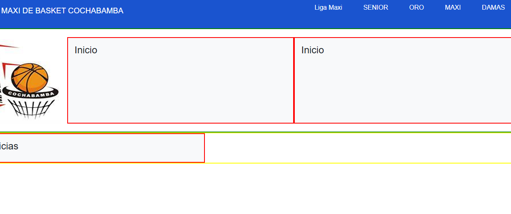
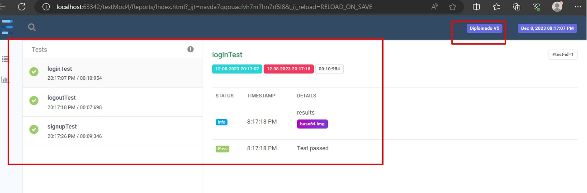
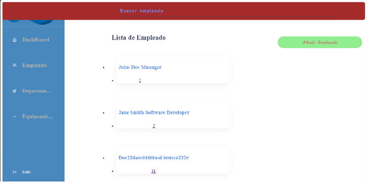
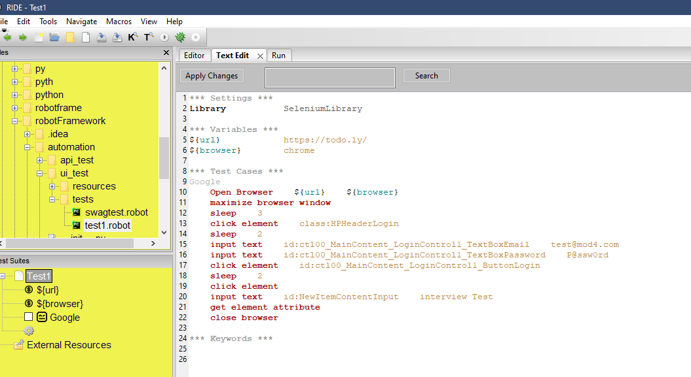
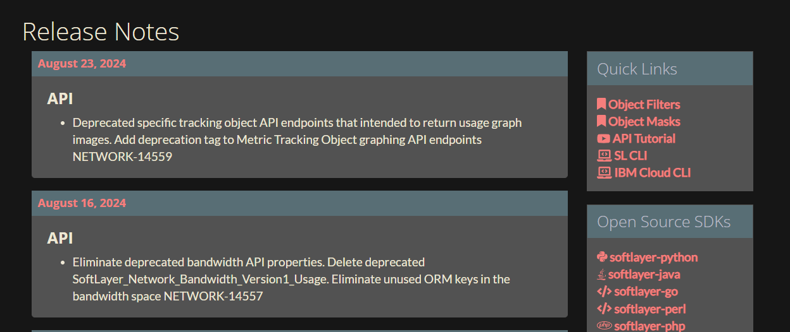

Maxi Page
Web page showing history, matches, categories, news, etc. related to the basketball championship of Liga Maxi Cochabamba.
By missing data, the page is implementing new features
Check it Out

Automation template
The automation template, a template to used apply in different projects, needs changes in the configuration and link page to work. This template is an ERP Human Resources project. Cucumber is the tool used in the test plan.
Check it Out

ERP HHRR
ERP Human Resources, application web designed for Human Resources to create, edit, read, and delete employees, departments, and items related to the company, backend and front end implementation with Spring boot, React, and connection Postgresql database
Check it Out

Robot Framework template
Robot framework, The automation template, a template to use the tool, and some examples to page. Only with some test cases implemented in the tool file.
Check it Out

Softlayer-python
Softlayer-Python, collaborator in some Issues, features, and documentation updates, solved the bugs, refactored, and created new commands.
Check it Out